For this week’s exercise, we’ll be taking part in Tidy Tuesday, a data analysis initiative where a community of analysts picks a dataset to analyze and discuss weekly. This week’s exercise contains information from NASA on the path of annularity and path of totality for the solar eclipse in 2023 and 2024. The annular path describes areas that will be able to see a “ring of fire” around the moon as it mostly blocks the sun. The totality path describes areas that will experience a full blocking of the sun by the moon, causing it to become dark in said region. This data includes the cities that will be in each of these paths as well as the predicted times that the eclipse will start and end for each location. We’ll load the data now using a script published in the TidyTuesday Github repository.
# Load the data and libraries library(tidytuesdayR)
Warning: package 'tidytuesdayR' was built under R version 4.3.3
library(ggplot2)
Warning: package 'ggplot2' was built under R version 4.3.3
library(dplyr)
Attaching package: 'dplyr'
The following objects are masked from 'package:stats':
filter, lag
The following objects are masked from 'package:base':
intersect, setdiff, setequal, union
library(tidymodels)
Warning: package 'tidymodels' was built under R version 4.3.2
# Look at a quick header for each data framehead(eclipse_annular_2023)
# A tibble: 6 × 10
state name lat lon eclipse_1 eclipse_2 eclipse_3 eclipse_4 eclipse_5
<chr> <chr> <dbl> <dbl> <time> <time> <time> <time> <time>
1 AZ Chilchinb… 36.5 -110. 15:10:50 15:56:20 16:30:29 16:33:31 17:09:40
2 AZ Chinle 36.2 -110. 15:11:10 15:56:50 16:31:21 16:34:06 17:10:30
3 AZ Del Muerto 36.2 -109. 15:11:20 15:57:00 16:31:13 16:34:31 17:10:40
4 AZ Dennehotso 36.8 -110. 15:10:50 15:56:20 16:29:50 16:34:07 17:09:40
5 AZ Fort Defi… 35.7 -109. 15:11:40 15:57:40 16:32:28 16:34:35 17:11:30
6 AZ Kayenta 36.7 -110. 15:10:40 15:56:00 16:29:54 16:33:21 17:09:10
# ℹ 1 more variable: eclipse_6 <time>
head(eclipse_partial_2023)
# A tibble: 6 × 9
state name lat lon eclipse_1 eclipse_2 eclipse_3 eclipse_4 eclipse_5
<chr> <chr> <dbl> <dbl> <time> <time> <time> <time> <time>
1 AL Abanda 33.1 -85.5 15:41:20 16:23:30 17:11:10 18:00:00 18:45:10
2 AL Abbeville 31.6 -85.3 15:42:30 16:25:50 17:13:50 18:03:10 18:49:30
3 AL Adamsville 33.6 -87.0 15:38:20 16:20:50 17:07:50 17:56:30 18:42:10
4 AL Addison 34.2 -87.2 15:37:50 16:19:50 17:06:50 17:55:10 18:40:30
5 AL Akron 32.9 -87.7 15:37:20 16:20:40 17:07:30 17:56:00 18:42:50
6 AL Alabaster 33.2 -86.8 15:38:50 16:21:30 17:08:40 17:57:20 18:43:20
head(eclipse_partial_2024)
# A tibble: 6 × 9
state name lat lon eclipse_1 eclipse_2 eclipse_3 eclipse_4 eclipse_5
<chr> <chr> <dbl> <dbl> <time> <time> <time> <time> <time>
1 AL Abanda 33.1 -85.5 17:43:00 18:24:10 19:02:00 19:39:20 20:18:50
2 AL Abbeville 31.6 -85.3 17:41:40 18:21:40 19:00:30 19:38:50 20:17:20
3 AL Adamsville 33.6 -87.0 17:41:00 18:23:10 19:00:00 19:36:40 20:17:30
4 AL Addison 34.2 -87.2 17:41:30 18:24:10 19:00:30 19:36:40 20:18:00
5 AL Akron 32.9 -87.7 17:38:40 18:20:40 18:58:00 19:35:00 20:15:50
6 AL Alabaster 33.2 -86.8 17:40:40 18:22:40 18:59:50 19:36:50 20:17:20
head(eclipse_total_2024)
# A tibble: 6 × 10
state name lat lon eclipse_1 eclipse_2 eclipse_3 eclipse_4 eclipse_5
<chr> <chr> <dbl> <dbl> <time> <time> <time> <time> <time>
1 AR Acorn 34.6 -94.2 17:30:40 18:15:50 18:47:35 18:51:37 19:23:40
2 AR Adona 35.0 -92.9 17:33:20 18:18:30 18:50:08 18:54:22 19:26:10
3 AR Alexander 34.6 -92.5 17:33:20 18:18:30 18:51:09 18:53:38 19:26:20
4 AR Alicia 35.9 -91.1 17:37:30 18:22:40 18:54:29 18:58:05 19:29:50
5 AR Alix 35.4 -93.7 17:32:50 18:17:50 18:49:54 18:53:00 19:25:20
6 AR Alleene 33.8 -94.3 17:29:10 18:14:20 18:46:15 18:50:16 19:22:30
# ℹ 1 more variable: eclipse_6 <time>
# Check summary of each framesummary(eclipse_annular_2023)
state name lat lon
Length:811 Length:811 Min. :27.22 Min. :-124.45
Class :character Class :character 1st Qu.:31.30 1st Qu.:-111.98
Mode :character Mode :character Median :35.42 Median :-106.70
Mean :35.41 Mean :-108.05
3rd Qu.:38.42 3rd Qu.:-101.36
Max. :44.87 Max. : -96.72
eclipse_1 eclipse_2 eclipse_3 eclipse_4
Length:811 Length:811 Length:811 Length:811
Class1:hms Class1:hms Class1:hms Class1:hms
Class2:difftime Class2:difftime Class2:difftime Class2:difftime
Mode :numeric Mode :numeric Mode :numeric Mode :numeric
eclipse_5 eclipse_6
Length:811 Length:811
Class1:hms Class1:hms
Class2:difftime Class2:difftime
Mode :numeric Mode :numeric
summary(eclipse_partial_2023)
state name lat lon
Length:31363 Length:31363 Min. :17.96 Min. :-176.60
Class :character Class :character 1st Qu.:35.36 1st Qu.: -97.50
Mode :character Mode :character Median :39.56 Median : -89.26
Mean :38.80 Mean : -91.97
3rd Qu.:41.93 3rd Qu.: -81.14
Max. :71.25 Max. : 174.11
eclipse_1 eclipse_2 eclipse_3 eclipse_4
Length:31363 Length:31363 Length:31363 Length:31363
Class1:hms Class1:hms Class1:hms Class1:hms
Class2:difftime Class2:difftime Class2:difftime Class2:difftime
Mode :numeric Mode :numeric Mode :numeric Mode :numeric
eclipse_5
Length:31363
Class1:hms
Class2:difftime
Mode :numeric
summary(eclipse_partial_2024)
state name lat lon
Length:28844 Length:28844 Min. :17.96 Min. :-176.60
Class :character Class :character 1st Qu.:35.24 1st Qu.: -99.08
Mode :character Mode :character Median :39.52 Median : -90.30
Mean :38.76 Mean : -93.00
3rd Qu.:42.04 3rd Qu.: -81.16
Max. :71.25 Max. : 174.11
eclipse_1 eclipse_2 eclipse_3 eclipse_4
Length:28844 Length:28844 Length:28844 Length:28844
Class1:hms Class1:hms Class1:hms Class1:hms
Class2:difftime Class2:difftime Class2:difftime Class2:difftime
Mode :numeric Mode :numeric Mode :numeric Mode :numeric
eclipse_5
Length:28844
Class1:hms
Class2:difftime
Mode :numeric
summary(eclipse_total_2024)
state name lat lon
Length:3330 Length:3330 Min. :28.45 Min. :-101.16
Class :character Class :character 1st Qu.:35.42 1st Qu.: -92.41
Mode :character Mode :character Median :39.24 Median : -86.56
Mean :38.33 Mean : -86.93
3rd Qu.:41.22 3rd Qu.: -82.31
Max. :46.91 Max. : -67.43
eclipse_1 eclipse_2 eclipse_3 eclipse_4
Length:3330 Length:3330 Length:3330 Length:3330
Class1:hms Class1:hms Class1:hms Class1:hms
Class2:difftime Class2:difftime Class2:difftime Class2:difftime
Mode :numeric Mode :numeric Mode :numeric Mode :numeric
eclipse_5 eclipse_6
Length:3330 Length:3330
Class1:hms Class1:hms
Class2:difftime Class2:difftime
Mode :numeric Mode :numeric
# Check for missing values in annular 2023missing_2023 <-sum(is.na(eclipse_annular_2023))print(paste("Number of missing values in df_2023: ", missing_2023))
[1] "Number of missing values in df_2023: 0"
# Check for missing values in total 2024missing_2024 <-sum(is.na(eclipse_total_2024))print(paste("Number of missing values in df_2024: ", missing_2024))
[1] "Number of missing values in df_2024: 0"
The data seems to be free of missing values. For definitions of each variable, see the TidyTuesday repository and the data for 04/9/2024.
Our data seems to have loaded in properly based off of the definitions given by the TidyTuesday group and our quick summaries of the objects we made. It may be useful to go into this with an idea of what questions we want to ask, so we can think of some ideas here. These can always be adjusted as we explore the data.
Here are my current ideas:
Do cities differ in their eclipse starting times (eclipse_1) between the datasets we’re given?
Based off of the picture included in the TidyTuesday repository, San Antonio experienced both the annual and total eclipse these past two years. Are there differences between the start and end times of each eclipse in this city?
Which places have the longest duration of totality this year?
We can begin making some plots to answer these questions. We’ll start by looking at the start times for the total and annular eclipses. However, we can see that the timestamp data is given in a format that R may find difficult to understand. We’ll start by converting the time data in each dataframe to a format R can use.
#Make a plot showing the different start times for the annular (2023) eclipse# Convert time column to a POSIXct object, a date-time class that R can understandeclipse_annular_2023$eclipse_1 <-as.POSIXct(eclipse_annular_2023$eclipse_1, format="%H:%M:%S")eclipse_annular_2023$eclipse_2 <-as.POSIXct(eclipse_annular_2023$eclipse_2, format="%H:%M:%S")eclipse_annular_2023$eclipse_3 <-as.POSIXct(eclipse_annular_2023$eclipse_3, format="%H:%M:%S")eclipse_annular_2023$eclipse_4 <-as.POSIXct(eclipse_annular_2023$eclipse_4, format="%H:%M:%S")eclipse_annular_2023$eclipse_5 <-as.POSIXct(eclipse_annular_2023$eclipse_5, format="%H:%M:%S")eclipse_annular_2023$eclipse_6 <-as.POSIXct(eclipse_annular_2023$eclipse_6, format="%H:%M:%S")# Create the plotEDAannular <-ggplot(eclipse_annular_2023, aes(x=eclipse_3, y=name)) +geom_point() +labs(x="Time of Annularity Start", y="City", title="Annularity Start Times in Different Cities") +theme_minimal()# Print the plotprint(EDAannular)
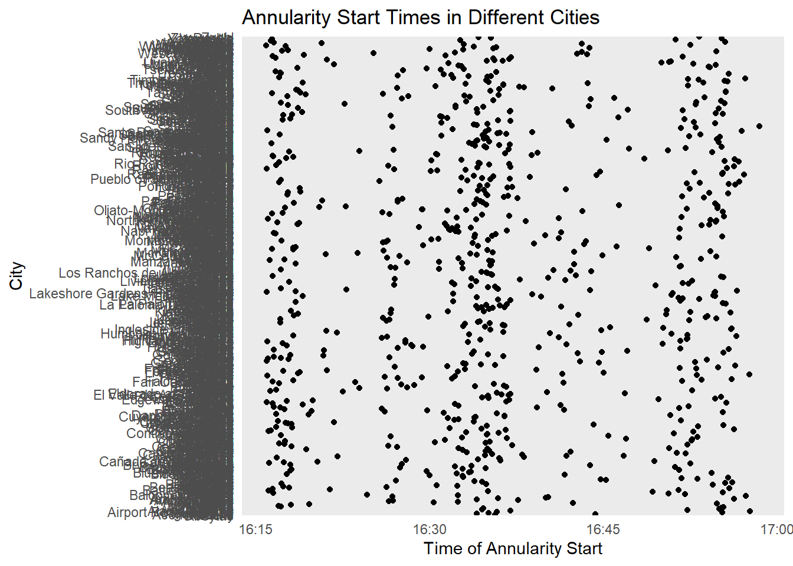
That’s a bit messy.. maybe we’ll start with the states instead given that we have about 800 cities to look at here.
# Create the plotEDAannular2 <-ggplot(eclipse_annular_2023, aes(x=eclipse_3, y=state)) +geom_point() +labs(x="Time of Annularity Start", y="State", title="Annularity Start Times in Different States") +theme_minimal()# Print the plotprint(EDAannular2)
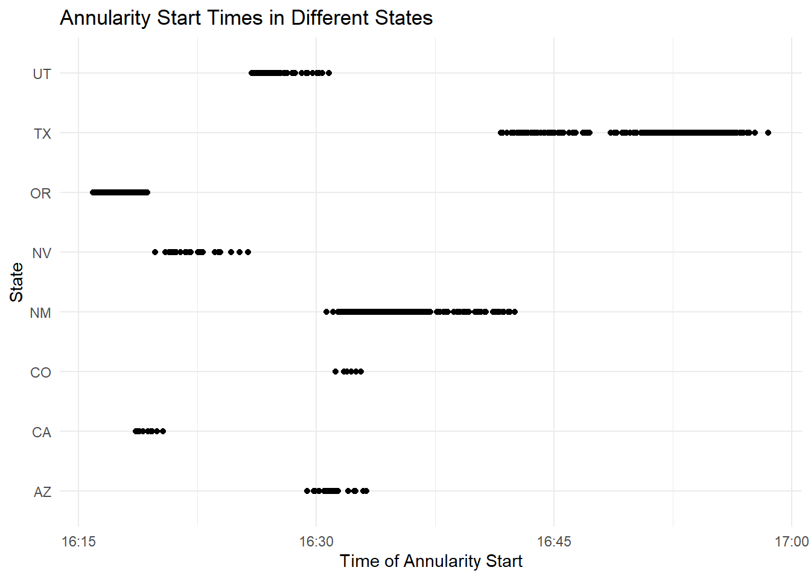
We can see that 8 states in the western US experienced the complete annular eclipse between 4:15 and 5 pm. Now let’s see how this compares to our total eclipse data for 2024. We’ll take the same steps for timestamps as we did previously.
# Convert time column to a POSIXct object, a date-time class that R can understandeclipse_total_2024$eclipse_1 <-as.POSIXct(eclipse_total_2024$eclipse_1, format="%H:%M:%S")eclipse_total_2024$eclipse_2 <-as.POSIXct(eclipse_total_2024$eclipse_2, format="%H:%M:%S")eclipse_total_2024$eclipse_3 <-as.POSIXct(eclipse_total_2024$eclipse_3, format="%H:%M:%S")eclipse_total_2024$eclipse_4 <-as.POSIXct(eclipse_total_2024$eclipse_4, format="%H:%M:%S")eclipse_total_2024$eclipse_5 <-as.POSIXct(eclipse_total_2024$eclipse_5, format="%H:%M:%S")eclipse_total_2024$eclipse_6 <-as.POSIXct(eclipse_total_2024$eclipse_6, format="%H:%M:%S")# Create the plotEDAtotal <-ggplot(eclipse_total_2024, aes(x=eclipse_3, y=state)) +geom_point() +labs(x="Time of Totality Start", y="State", title="Totality Start Times in Different States") +theme_minimal()# Print the plotprint(EDAtotal)
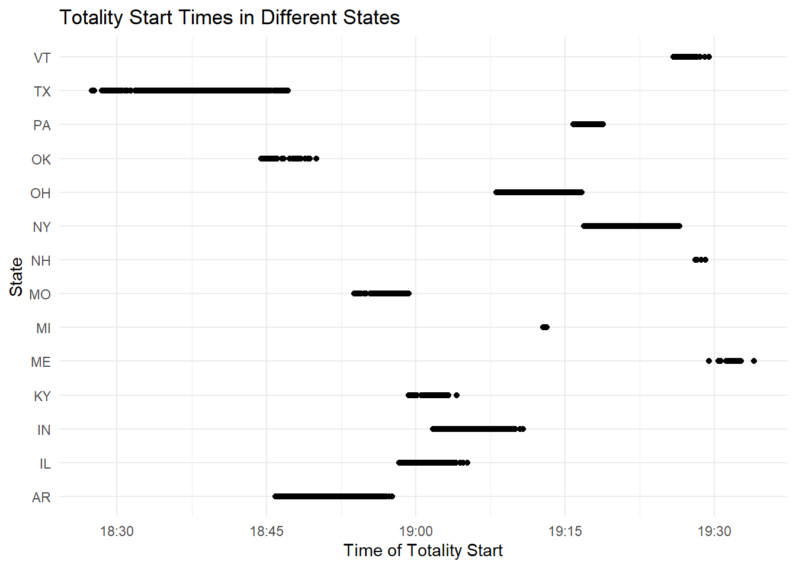
We can see that for this eclipse, there are 14 states that experienced complete totality. The start times ranged from 6:30-7:30 pm apparently. There’s a mixture of eastern and western states for this one. Now we can investigate when eclipses for each year ended.
# Create the plotEDAannular3 <-ggplot(eclipse_annular_2023, aes(x=eclipse_4, y=state)) +geom_point() +labs(x="Time of Annularity End", y="State", title="Annularity End Times in Different States") +theme_minimal()# Print the plotprint(EDAannular3)
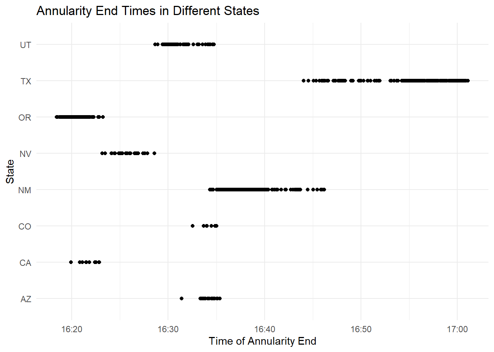
# Create the plotEDAtotal2 <-ggplot(eclipse_total_2024, aes(x=eclipse_4, y=state)) +geom_point() +labs(x="Time of Totality End", y="State", title="Totality End Times in Different States") +theme_minimal()# Print the plotprint(EDAtotal2)
Both eclipses appear to have been very short in duration as the start and end times don’t differ too much; however, we can see that the annular eclipse end ranged from around 4:20 to slightly after 5 pm. The total eclipse ended between around 6:35 to shortly after 7:30. Texas had the longest eclipse duration of each state; this is likely due to how large it is.
Now I think it would be interesting to compare the cities that experienced that total and annual eclipse and see if any of them got both. Based off of the map included in the TIdyTuesday repository, we expect to see San Antonio on this list.
# Merge the two data frames by city and stateeclipse_both <-inner_join(eclipse_annular_2023, eclipse_total_2024, by=c("name", "state"), suffix=c("_2023", "_2024"))# Check the new dataframe to see what states/cities got both eclipsesglimpse(eclipse_both)
# Create the plotboth_eclipse_cities <-ggplot(eclipse_both) +geom_point(aes(x=eclipse_3_2023, y=name), color="blue", alpha=0.5) +geom_point(aes(x=eclipse_3_2024, y=name), color="red", alpha=0.5) +labs(x="Time of Eclipse Start", y="City", title="Eclipse Start Times in Different Cities") +theme_minimal()# Print the plotprint(both_eclipse_cities)
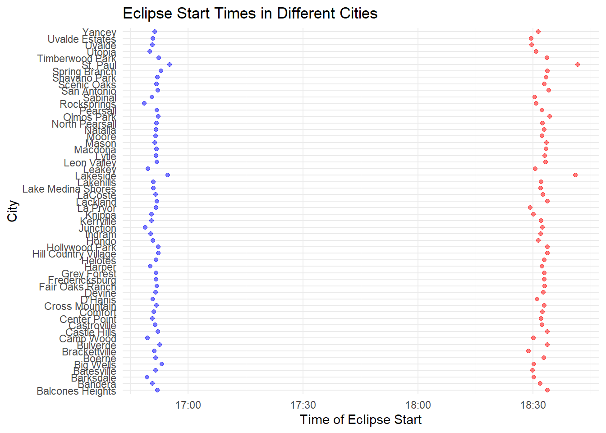
Looking at our new dataframe with only cities that experienced both eclipses, we can see that Texas cities are the only ones included. This means that our guesses from the TidyTuesday repository were correct; Texas is the only state with cities that experienced both eclipses. The plot shows the differences in the start times between the two eclipses based on city (red is total and blue is annular); there are a lot of cities, so it’s difficult to read the y-axis, but looking at the object we can see that 56 unique cities are included.
We also have data on cities that experienced a partial eclipse in either year. There are 31363 cities with partial eclipses in 2023 and 28844 for 2024. We could see if there are any recurring cities on this list now.
# Convert time column to a POSIXct object, a date-time class that R can understand. 2023 first, then 2024eclipse_partial_2023$eclipse_1 <-as.POSIXct(eclipse_partial_2023$eclipse_1, format="%H:%M:%S")eclipse_partial_2023$eclipse_2 <-as.POSIXct(eclipse_partial_2023$eclipse_2, format="%H:%M:%S")eclipse_partial_2023$eclipse_3 <-as.POSIXct(eclipse_partial_2023$eclipse_3, format="%H:%M:%S")eclipse_partial_2023$eclipse_4 <-as.POSIXct(eclipse_partial_2023$eclipse_4, format="%H:%M:%S")eclipse_partial_2023$eclipse_5 <-as.POSIXct(eclipse_partial_2023$eclipse_5, format="%H:%M:%S")eclipse_partial_2024$eclipse_1 <-as.POSIXct(eclipse_partial_2024$eclipse_1, format="%H:%M:%S")eclipse_partial_2024$eclipse_2 <-as.POSIXct(eclipse_partial_2024$eclipse_2, format="%H:%M:%S")eclipse_partial_2024$eclipse_3 <-as.POSIXct(eclipse_partial_2024$eclipse_3, format="%H:%M:%S")eclipse_partial_2024$eclipse_4 <-as.POSIXct(eclipse_partial_2024$eclipse_4, format="%H:%M:%S")eclipse_partial_2024$eclipse_5 <-as.POSIXct(eclipse_partial_2024$eclipse_5, format="%H:%M:%S")# Merge the two data frames by city and statepartial_both <-inner_join(eclipse_partial_2023, eclipse_partial_2024, by=c("name", "state"), suffix=c("_2023", "_2024"))
Warning in inner_join(eclipse_partial_2023, eclipse_partial_2024, by = c("name", : Detected an unexpected many-to-many relationship between `x` and `y`.
ℹ Row 370 of `x` matches multiple rows in `y`.
ℹ Row 370 of `y` matches multiple rows in `x`.
ℹ If a many-to-many relationship is expected, set `relationship =
"many-to-many"` to silence this warning.
# Check the new dataframe to see what states/cities were partial both yearsglimpse(partial_both)
# Create the plotpartial_eclipse_cities <-ggplot(partial_both) +geom_point(aes(x=eclipse_3_2023, y=name), color="blue", alpha=0.5) +geom_point(aes(x=eclipse_3_2024, y=name), color="red", alpha=0.5) +labs(x="Time of Eclipse Start", y="City", title="Eclipse Start Times in Different Cities") +theme_minimal()# Print the plotprint(partial_eclipse_cities)
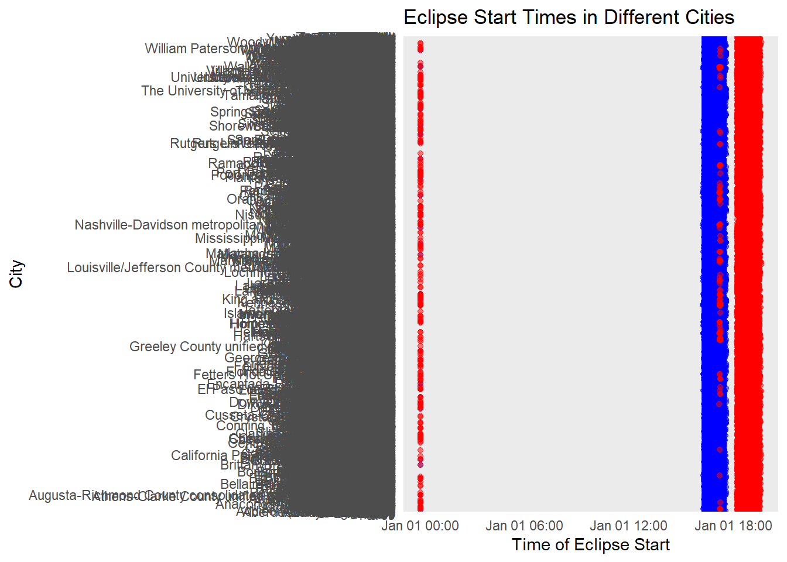
We have a huge number of cities (285009) that experienced partial eclipses in both years. This data seems difficult to deal with and is less interesting than the total/annular eclipse regions, so we’ll shift our focus away from these sets for the time being. We can now try to answer the final question I posed earlier: which cities had the longest duration of annularity and which will have the longest duration of totality? We’ll need to create two new columns in our dataframe that contain the total duration of each eclipse to do this.
# Create two new columns in the dataframe with cities that experienced both eclipseseclipse_both$duration_2023 <- eclipse_both$eclipse_4_2023 - eclipse_both$eclipse_3_2023eclipse_both$duration_2024 <- eclipse_both$eclipse_4_2024 - eclipse_both$eclipse_3_2024# Plot for 2023ggplot(eclipse_both, aes(x=name, y=duration_2023)) +geom_bar(stat="identity") +theme(axis.text.x =element_text(angle =90, hjust =1)) +labs(x ="City", y ="Duration of 2023 Eclipse", title ="Comparison of 2023 Eclipse Durations")
Don't know how to automatically pick scale for object of type <difftime>.
Defaulting to continuous.
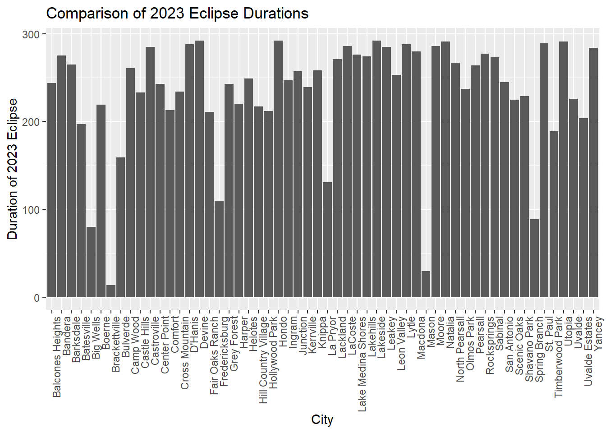
# Plot for 2024ggplot(eclipse_both, aes(x=name, y=duration_2024)) +geom_bar(stat="identity") +theme(axis.text.x =element_text(angle =90, hjust =1)) +labs(x ="City", y ="Duration of 2024 Eclipse", title ="Comparison of 2024 Eclipse Durations")
Don't know how to automatically pick scale for object of type <difftime>.
Defaulting to continuous.
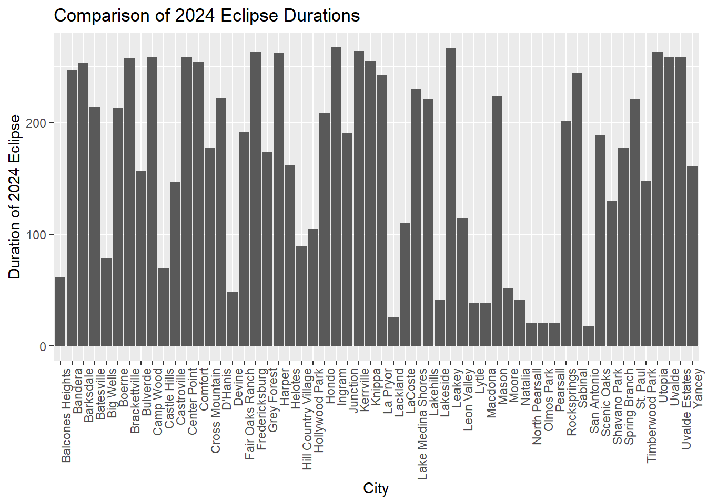
The duration values on the y axis are in seconds. We can see that the total eclipse seemed to be shorter overall and that cities who had a longer annular eclipse didn’t always have a long total one. This graph seems to point to an interesting question we could ask: is there a correlation between city and eclipse duration in the data from these two years, or does it seem to be random which cities experience longer eclipses? Based off of the graphs we see here, I hypothesize that there’s little to no correlation between eclipse duration and specific cities.
From our EDA so far, we can see that Texas is the only state with cities that experience both eclipses, so it will be interesting to see if a model accurately predicts eclipse duration for them. Before we fit any models, we first need to calculate the durations of the partial eclipses and merge each frame into a new object for analysis.
# Create new columns in each uncombined dataframe with the duration of each eclipseeclipse_annular_2023$duration <- eclipse_annular_2023$eclipse_4 - eclipse_annular_2023$eclipse_3eclipse_total_2024$duration <- eclipse_total_2024$eclipse_4 - eclipse_total_2024$eclipse_3eclipse_partial_2023$duration<- eclipse_partial_2023$eclipse_4 -eclipse_partial_2023$eclipse_3eclipse_partial_2024$duration<- eclipse_partial_2024$eclipse_4 -eclipse_partial_2024$eclipse_3#Create copies of each dataframe that remove the columns we don't need for our analysis. This will make it possible to merge them into one dataframe after. We'll also add a new columns that allow us to differentiate between which set the observations came from upon merging them.eclipse_total_2024_duration <- eclipse_total_2024 %>%select(name, state, duration) %>%mutate(year =2024, eclipse_type ="total")eclipse_annular_2023_duration <- eclipse_annular_2023 %>%select(name, state, duration) %>%mutate(year =2023, eclipse_type ="annular")eclipse_partial_2023_duration <- eclipse_partial_2023 %>%select(name, state, duration) %>%mutate(year =2023, eclipse_type ="partial")eclipse_partial_2024_duration <- eclipse_partial_2024 %>%select(name, state, duration) %>%mutate(year =2024, eclipse_type ="partial")# Combine dataframesduration_combined <-bind_rows(eclipse_total_2024_duration, eclipse_annular_2023_duration, eclipse_partial_2023_duration, eclipse_partial_2024_duration)#Make the duration variable numeric so it works with our model fitting functionsduration_combined$duration <-as.numeric(duration_combined$duration)
Now we have a cleaned and merged dataset with new variables that make an analysis easy. Let’s pick a new question for which we can create models to answer now that we’ve done an EDA. I’m thinking that it would be interesting to see if there’s a correlation between eclipse duration and the type of eclipse. I think that we will observe similar durations for each type.
We can now begin to fit some models to the cleaned data. We’ll use train/test splits and CV wherever applicable. I consulted Microsoft Copilot in Precise Mode for advice and determined that a Linear Regression, Decision Tree model, and Random Forest model would work well for my data since I have a combination of numerical and categorical variables I want to analyze. I used Microsoft Copilot to generate the basic code and modified it according to my specifics.
# Convert the type of eclipse to a factorduration_combined$eclipse_type <-as.factor(duration_combined$eclipse_type)# Split the data into training and testing setsset.seed(123)data_split <-initial_split(duration_combined, prop =0.75)train_data <-training(data_split)test_data <-testing(data_split)# Cross-validation (5-fold)cv <-vfold_cv(train_data, v =5)# Model 1: Linear Regressionmodel1 <-linear_reg() %>%set_engine("lm") %>%set_mode("regression")# Model 2: Decision Treemodel2 <-decision_tree() %>%set_engine("rpart") %>%set_mode("regression")# Model 3: Random Forestmodel3 <-rand_forest() %>%set_engine("ranger") %>%set_mode("regression")# Define the workflowworkflow1 <-workflow() %>%add_model(model1) %>%add_formula(duration ~ eclipse_type)workflow2 <-workflow() %>%add_model(model2) %>%add_formula(duration ~ eclipse_type)workflow3 <-workflow() %>%add_model(model3) %>%add_formula(duration ~ eclipse_type)# Fit the modelsfit1 <-fit(workflow1, data = train_data)fit2 <-fit(workflow2, data = train_data)fit3 <-fit(workflow3, data = train_data)# Print the resultsfit1
══ Workflow [trained] ══════════════════════════════════════════════════════════
Preprocessor: Formula
Model: rand_forest()
── Preprocessor ────────────────────────────────────────────────────────────────
duration ~ eclipse_type
── Model ───────────────────────────────────────────────────────────────────────
Ranger result
Call:
ranger::ranger(x = maybe_data_frame(x), y = y, num.threads = 1, verbose = FALSE, seed = sample.int(10^5, 1))
Type: Regression
Number of trees: 500
Sample size: 48261
Number of independent variables: 1
Mtry: 1
Target node size: 5
Variable importance mode: none
Splitrule: variance
OOB prediction error (MSE): 159581.6
R squared (OOB): 0.6393153
The models successfuly fit; now we’ll discuss the results from each before we compare the performance of each model.
Linear Regression: The duration of a partial eclipse is, on average, 2154.02 seconds longer than an annular eclipse. The duration of a total eclipse is, on average, 17.72 seconds shorter than an annular eclipse.
Decision Tree: The decision tree splits the data into groups based on the eclipse type. The root node represents the entire dataset, with an average duration of 2218.1060 seconds. The tree then splits the data into two groups: one for annular and total eclipses, and another for partial eclipses. The average duration for annular and total eclipses is about 189 seconds, while the average duration for partial eclipses is about 2357 seconds.
Random Forest: The random forest model provides an MSE of 159581.6. The R-squared value indicates that around 63.93% of the variability in duration can be explained by the eclipse type.
Now we’ll evaluate each model by comparing their RMSEs, residuals, and observed vs. predicted accuracy. This will help us choose the “best” model that we can then evaluate using the test data from the split we made earlier.
# A tibble: 3 × 3
.metric .estimator .estimate
<chr> <chr> <dbl>
1 rmse standard 399.
2 rsq standard 0.639
3 mae standard 303.
perf2
# A tibble: 3 × 3
.metric .estimator .estimate
<chr> <chr> <dbl>
1 rmse standard 399.
2 rsq standard 0.639
3 mae standard 303.
perf3
# A tibble: 3 × 3
.metric .estimator .estimate
<chr> <chr> <dbl>
1 rmse standard 399.
2 rsq standard 0.639
3 mae standard 303.
# Combine the predictions into one dataframepredictions_df <-bind_rows( pred1 %>%mutate(Model ="Linear Regression"), pred2 %>%mutate(Model ="Decision Tree"), pred3 %>%mutate(Model ="Random Forest"))# Create a residuals plot using ggplot2ggplot(predictions_df, aes(x = duration)) +geom_point(aes(y = residuals, color = Model), shape =1) +geom_abline(slope =0, intercept =0, color ="black", linetype ="dashed") +labs(x ="Observed", y ="Residuals") +# Axis labelstheme_minimal() +# Minimal themescale_color_manual(values =c("red", "blue", "green")) +# Color for each modelguides(color =guide_legend(title ="Model")) # Legend title
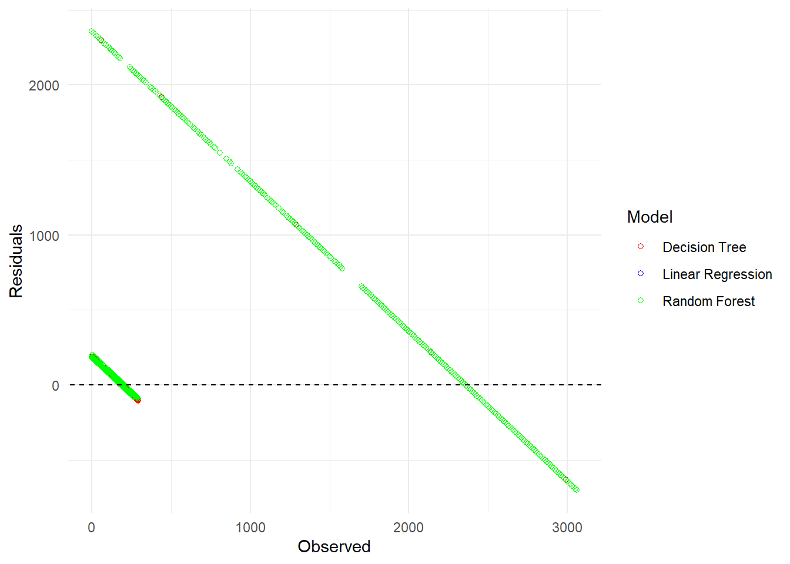
# Create an observed vs predicted plot using ggplot2ggplot(predictions_df, aes(x = duration, y = .pred, color = Model)) +geom_point() +geom_abline(slope =1, intercept =0, color ="black", linetype ="dashed") +labs(x ="Observed", y ="Predicted") +# Axis labelstheme_minimal() +# Minimal themescale_color_manual(values =c("red", "blue", "green")) +# Color for each modelguides(color =guide_legend(title ="Model")) # Legend title
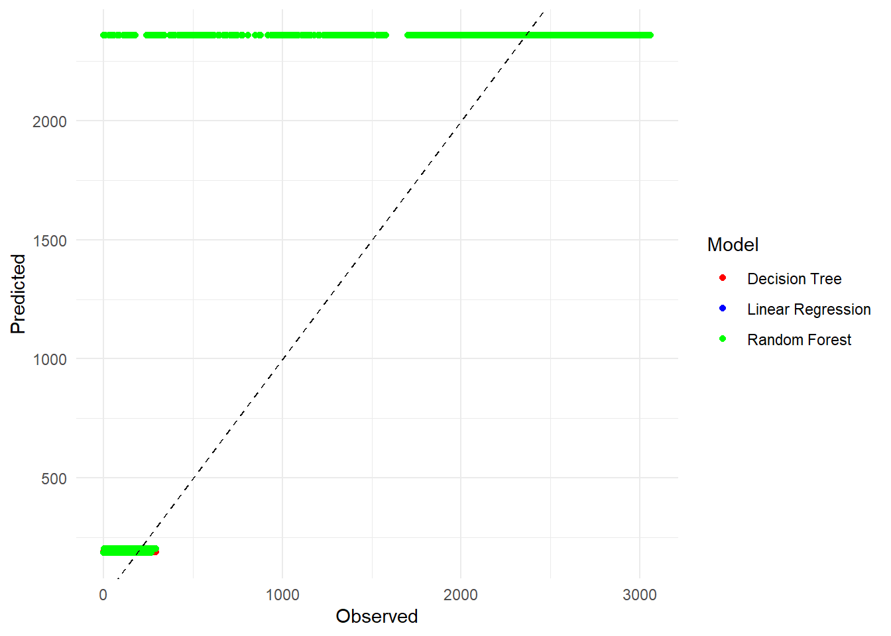
We can see that the RMSEs, predictions, and residuals are all similar for each model. They seem to overlap heavily and split into two distinct lines on both graphs; we can assume that the small line is our total/annular eclipses and the big line is our partial eclipses. Since our metrics are all pretty close, I think it’s safe to pick the simplest model (linear regression) in order to make interpretation easier.
We’ll now evaluate the performance of our trained model using the test data we reserved at the start of our model fitting.
# Use the 'fit' object to predict on the test datapred_test <-predict(fit1, new_data = test_data) %>%bind_cols(test_data)# Calculate residualspred_test <- pred_test %>%mutate(residuals = .pred - duration)# Evaluate performance using RMSErmse_test <- pred_test %>%rmse(truth = duration, estimate = .pred)# Print RMSEprint(rmse_test)
# A tibble: 1 × 3
.metric .estimator .estimate
<chr> <chr> <dbl>
1 rmse standard 391.
# Plot residualsggplot(pred_test, aes(x = .pred, y = residuals)) +geom_point() +geom_hline(yintercept =0, color ="black", linetype ="dashed") +labs(x ="Predicted", y ="Residuals") +# Axis labelstheme_minimal() # Minimal theme
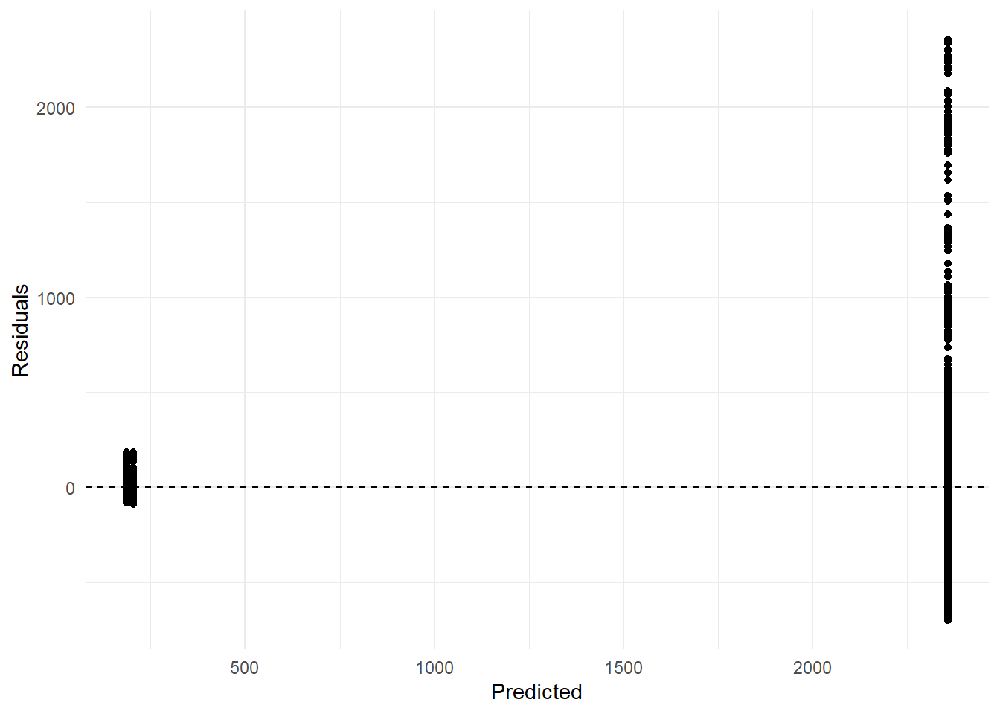
# Plot observed vs predicted valuesggplot(pred_test, aes(x = duration, y = .pred)) +geom_point() +geom_abline(slope =1, intercept =0, color ="black", linetype ="dashed") +labs(x ="Observed", y ="Predicted") +# Axis labelstheme_minimal() # Minimal theme
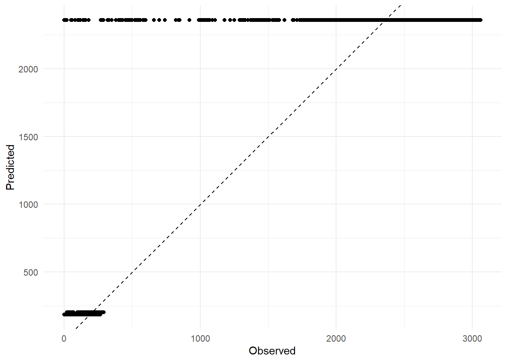
This looks pretty solid for the total/annular eclipse observations, but the partial eclipse predictions and residuals are pretty bad. The RMSE of 390 is pretty similar to our prior models (all fell around 399), so at least we know this model can make predictions for unseen data just about as well as it did for the training data. Overall this isn’t an extremely useful analysis and the model could likely be improved, but it’s just for practice and to show that I can pilot a complete data analysis at this point in the class.
In summary, we conducted an EDA on the TidyTuesday eclipse dataset and did some cleaning in the process. We formulated a question based off of the data: Is there a correlation between eclipse duration and the type of eclipse? Our hypothesis was that each eclipse type would have a similar duration; however, after fitting the data to several models and evaluating the “best” model on our test data, we see that the annular and total eclipses were a couple minutes shorter on average than our partial eclipses. This could have something to do with how we calculated eclipse duration. For total/annular eclipse sets, we subtracted the start of totality/annularity from the end of the eclipses. For the partial eclipse sets, we calculated duration by subtracting the peak of each eclipse from the end of the eclipse.
If the definitions of a peak partial eclipse and the start of totality/annularity are different, then we could be comparing times that aren’t measuring the same thing. I don’t personally know the difference, but it seems to me that they’d be similar. Overall, as shown by the graph below, we can see that total/annular eclipses seem to last shorter on average than partial eclipses.
# Create a boxplotggplot(duration_combined, aes(x = eclipse_type, y = duration)) +geom_boxplot() +labs(x ="Type of Eclipse", y ="Duration") +# Axis labelstheme_minimal() # Minimal theme